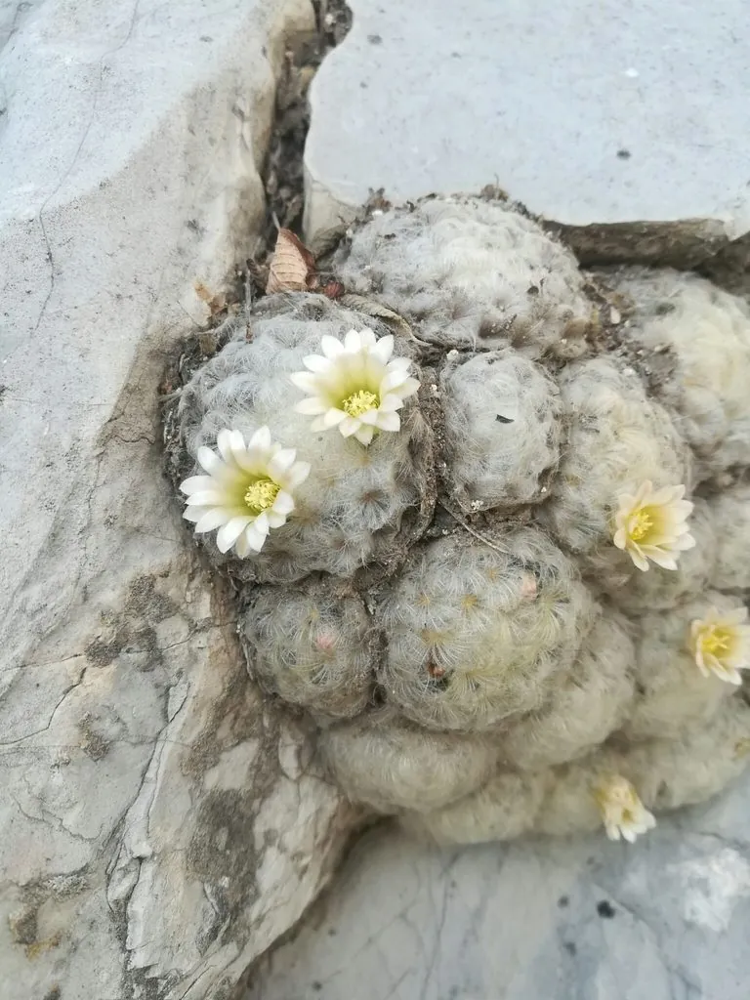

多肉植物 · 植物界
白星 Mammillaria plumosa

仙人掌科乳突球属多年生肉质植物，球体密被白色羽毛状软刺，摸上去如绒球般柔软，是刺最不扎手的仙人球之一。
- 分类
- 门被子植物门纲木兰纲目石竹目科仙人掌科属乳突球属
- 栖息环境
- 原产墨西哥北部石灰岩山地，喜光耐旱、通风良好
- 地理分布
- 原产墨西哥北部；中国各地作为观赏仙人球栽培
- 保护级别
- 暂无评估；栽培观赏植物，不涉及保护等级
物种志
白星为仙人掌科乳突球属多年生肉质植物，球体丛生，单个球体扁球形，高约五厘米，直径六至七厘米。疣突紧密排列，刺座上的周刺特化为白色羽毛状，细密柔软，覆盖整个球体，使植株呈雪白色绒球状；中刺缺失。花小，漏斗状，白色至淡黄色，花期夏季；浆果棒状，成熟时红色，种子褐色。
白星原产墨西哥北部，中国各地作为观赏仙人球栽培。它喜光、耐旱，夏季高温时需适度遮阴；适宜疏松透气、排水良好的颗粒基质，忌积水和闷热。白色羽毛刺柔软不扎手，球体丛生如一群小雪球，是仙人球中最具观赏性的种类之一；但羽毛刺容易藏污纳垢，浇水时避免直接淋在球体上。繁殖以分株和播种为主。
形态与习性
- 株型扁球形，丛生
- 球径直径 6–7 cm，高约 5 cm
- 花期夏季，花小、白色
- 光照喜光，夏季适度遮阴
- 水分耐旱，忌球面积水
- 土壤疏松排水良好的颗粒土
- 主要用途仙人球盆栽、组合盆景
趣味知识
- 白星的刺特化成白色羽毛状，柔软得像绒球，是少数可以上手轻摸的仙人球。
- 它的羽毛刺能遮挡强光、减少水分蒸发，是适应干旱环境的巧妙结构。
- 白星容易丛生，一个球体旁边会不断冒出小侧球，长成一群白色小球。